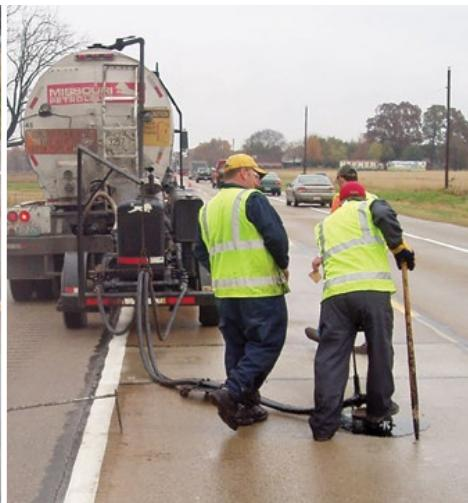
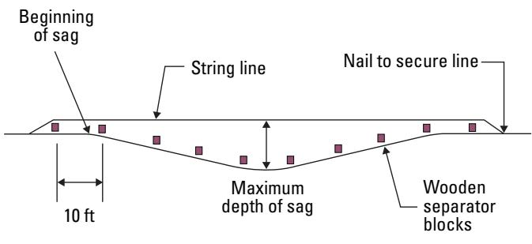
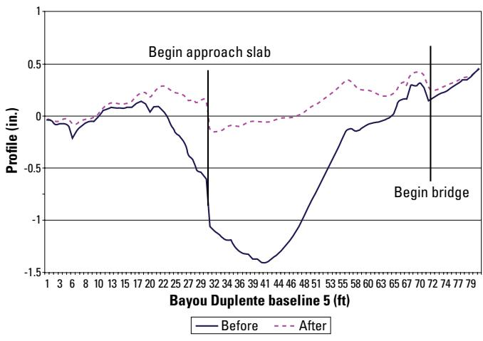

Slab Stabilization
Planning & decision-making review — 17/19 chunks kept, 1 guides.
1. Purpose and applicability
What problem does Slab Stabilization solve?
Slab stabilization addresses the fundamental problem of lost subgrade support beneath concrete pavements. When voids develop—whether from base or sub‑base deterioration, pumping, or faulting—they cause excessive slab deflection, settlement and poor load transfer at cracks, compromising the slab’s bearing capacity. Slab stabilization is defined as the insertion of a material beneath the slab or subbase to fill voids, thereby reducing deflections and associated distresses. [1]
 Recreated from ©2022 Applied Pavement Technology, Inc., used with permission Figure 3.9. Center slab deflection variation along a project normalized to a 9,000 lbf loading [1]
Recreated from ©2022 Applied Pavement Technology, Inc., used with permission Figure 3.9. Center slab deflection variation along a project normalized to a 9,000 lbf loading [1]
CPP Guide — Ch. 4 (pp. 81–95), Ch. 6 (pp. 156–157)
When is Slab Stabilization appropriate, and when should another method be used?
Slab stabilization should be employed only after confirming that loss of support exists and is confined to a limited area. When subsurface voids or loss of support have been positively identified—typically at joints or working cracks—through deflection testing, GPR, or a simple water‑filled hole test, and the pavement shows only localized settlement without extensive cracking, stabilization is appropriate. It is also suitable when the slab remains structurally sound, rests on a granular or otherwise stabilized sub‑base, and the distress appears as an isolated depression such as over a culvert or bridge approach. The procedure must be carried out before surface distress develops and under temperature conditions compatible with the selected material. Conversely, stabilization should not be used if no voids are present, if joints are faulted or load‑transfer devices are deficient, when major structural damage (corner breaks, widespread cracking) exists, or when the subgrade is composed of extensive fine‑grained, high‑water‑content soils. In those situations, other preservation methods—dowel‑bar retrofitting, diamond grinding, joint sealing, full‑depth reclamation, or complete slab replacement—are required. [1]
CPP Guide — Ch. 4 (pp. 81–91)
2. Required inputs
What materials, mixture properties, and site conditions does Slab Stabilization require?
Slab stabilization is performed by pressure insertion of a flowable material (commonly polyurethane or a cement grout but occasionally asphalt cement) into verified voids beneath concrete slabs. The technique relies on materials that can travel through drilled holes, fill irregular cavities, and then develop sufficient strength to support the slab.
Materials - Polyurethane injection foam – the most common choice; it is hydrophobic, cures rapidly (15‑30 min), and can penetrate openings as small as 0.25 in. - Cement‑based grouts – limestone‑dust cement grout, pozzolanic cement grout, or other low‑flow mixes injected under controlled pressure. - Flowable fill – a self‑leveling blend used as backfill; it is described as “flowable fill—a controlled low‑strength, self‑leveling material made with cement, supplementary cementitious materials (SCMs), and water” and can be poured directly to the slab bottom without compaction. - Granular backfill, or cement‑treated sand/soil, may be placed beneath the slab when a granular support layer is preferred.
Mixture properties - Polyurethane must have a density of about 3 to 4 lb/ft³ and develop compressive strengths in the range of 60–145 psi (“For slab stabilization purposes, the polyurethane density is about 3 to 4 lb/ft3 and the compressive strength ranges from about 60 to 145 lbf/in2”). Its high flowability allows it to fill tiny voids. - Cement grout injections are limited to low pressures (typically 40–60 psi) with a pump rate near 1.5 gpm; steady‑flow pressures should stay between 25 and 200 psi but not exceed 100 psi during the main injection phase. - Flowable fill is a low‑strength, self‑leveling mix that reaches usable strength within a few hours, providing uniform support without the need for mechanical compaction.
Site conditions and procedural requirements - The slab must be structurally sound and resting on a granular or cement‑treated subbase; stabilization is limited to joints and working cracks where loss of support has been confirmed. - Ambient temperature should be above 40 °F before material placement begins. - Injection holes are drilled through the slab (maximum diameter 0.625 in.) and, when the pavement is bonded to a cement‑treated base, must penetrate that base as well. - Lift monitoring is critical: no individual hole should raise the slab more than 0.25 in., and the entire surface must remain within a quarter‑inch of uniformity (final profiles toleranced to about 0.25–0.38 in.). - When granular backfill is used, it “should be placed in 6 to 8 in. lifts and adequately compacted (95% of density as determined by AASHTO T 99) to minimize settlement”; cement‑treated sand/soil receives only enough cement to “cake” the mix, preserving future excavability.
By adhering to these material specifications, mixture properties, and site‑condition controls, slab stabilization provides reliable bearing support and extends the service life of concrete pavements. [1]
CPP Guide — Ch. 4 (pp. 81–95), Ch. 6 (pp. 156–157)
What design details, dimensions, tolerances, or preconstruction tests govern Slab Stabilization?
The design process for slab stabilization starts with a detailed pre‑construction investigation to confirm void presence and assess support conditions. Deflection testing using an FWD is required in cool weather; deflection testing be conducted when the ambient temperature is below 70°F. The test applies three load levels (6 k, 9 k, 14 k lbf) and triggers stabilization when a corner deflection exceeds 0.03 in or the corner‑to‑interior support ratio falls below 0.75. Ground‑penetrating radar and dynamic cone penetrometer testing locate air‑filled gaps as thin as 0.25 in.
Material selection for polyurethane foam calls for a density of 3–4 lb/ft³, compressive strength of 60–145 psi, and the ability to flow into openings ≥0.25 in (occasionally down to 0.125 in) with cure times of 15–30 min.
Injection‑hole layout is governed by strict spacing rules: holes should be spaced not less than 12 in. but not more than 18 in. from a transverse joint or slab edge, and overall hole spacing shall not exceed 6 ft on center so that each lift influences ≤30 ft² of slab. Maximum hole diameters are 0.625 in for polyurethane and 1.25–2.0 in for cement‑based grout; drilling force is limited to 200 lbf, and a water‑test is performed before injection.
Pump pressures are maintained between 25–200 psi (typically 40–60 psi); the maximum allowable pressure for cement grout is A maximum allowable pressure of 100 lbf/in2 is obtained, with a brief surge to 200 psi allowed only at start‑up. Flow rates are kept low (~1.5 gpm) to control uplift.
Uplift tolerances are stringent: overall slab lift must not exceed 0.05 in, and no more than 0.25 in. at a time when pumping at each hole. The slab profile must remain within 0.25–0.38 in of a common plane, verified continuously with laser level or string‑line methods capable of detecting movement greater than 0.001 in.
Temperature constraints require ambient conditions above 40°F for material injection. After stabilization, backfill is placed in 6 to 8 in. lifts and compacted to at least 95 % of maximum dry density per AASHTO T‑99. Where rapid construction sequencing is needed, flowable fill—a low‑strength, self‑leveling cementitious blend—may be poured directly beneath the slab without compaction, achieving usable strength within a few hours.
These design details, dimensions, tolerances, and pre‑construction tests collectively govern successful slab stabilization and ensure long‑term pavement performance. [1]
CPP Guide — Ch. 4 (pp. 82–94), Ch. 6 (pp. 156–157)
3. Equipment and personnel
What equipment does Slab Stabilization need for preparation, placement, compaction or consolidation, finishing, curing, and testing?
Preparation begins with drilling equipment to bore the required holes and the immediate placement of tapered wooden plugs or small wooden blocks to seal each opening. Placement uses a low‑pressure grout injection system that relies on “positive‑displacement injection pumps or nonpulsing progressive‑cavity pumps” capable of “maintaining pressures between 25 and 200 lbf/in2 during grout injection”; drive packers are inserted for the one‑inch holes, and the injection line incorporates “a fast‑control reverse switch to stop grout injection quickly when slab movement is detected on the uplift gauge”. No separate compaction equipment is required because the controlled pump flow consolidates the material in situ. Finishing involves withdrawing the wooden plugs after the grout has set, trimming any excess flush with the surface, and patching the holes with compatible repair material. Curing is achieved by protecting the slab from temperatures below 40 °F and restricting traffic for at least three hours; no dedicated curing apparatus is specified. Testing and monitoring employ “With a laser level, profiles are established (typical maximum spacing of 5 ft)” to check elevation during injection, while an uplift‑monitoring device records deflections as small as 0.001 in before and after stabilization to verify restored support. [1]

Injection of asphalt undersealing material [1]CPP Guide — Ch. 4 (pp. 87–94)
What operator skills, crew roles, or qualified personnel does Slab Stabilization require?
The slab‑stabilization crew is composed of an experienced contractor who operates the low‑rate cement grout pump, controls pressure, maintains the prescribed pumping rate, recognises flow from adjacent holes, and stops injection when voids are filled; a qualified inspector conducts continuous visual checks to verify that voids are completely filled without damaging the slab. Both must continuously monitor slab uplift with high‑resolution devices and ensure lift limits are not exceeded. The team also includes personnel skilled in evaluating the repair area and establishing an appropriate injection‑hole pattern, because “the appropriate location of holes for a given site can only be determined by experienced personnel.” Quality‑assurance staff are required to track lift heights at each hole, keeping elevations within 0.25 in tolerance using a string line or other leveling system (“These elevations can be monitored using a string line or other leveling system”). Coordination among the contractor, inspector, and QA staff is essential to prevent over‑grouting, avoid blowouts on embankments or bridge approaches, and maintain slab deflection within acceptable limits. [1]
CPP Guide — Ch. 4 (pp. 88–95)
4. Work sequence
What must be completed before Slab Stabilization begins?
The reviewer notes that before any slab‑stabilization work can commence a sequence of prerequisite actions must be satisfied. First, the pavement segment must be thoroughly evaluated to confirm loss of support; deflection testing is required because “Deflection testing—This is the most common method for identifying loss of support and one that is very effective.” The results identify void locations and verify that distress is limited to pumping or faulting. Concurrently, project documentation (specifications, drawings, inspection plan) must be prepared and the contractor must have the stabilization material, mobile injection equipment, and an ambient temperature of at least 40 °F.
Next, a detailed ground investigation must be performed; “Prior to injection of the material, a detailed ground investigation of the damaged pavement section must be carried out”. This includes subsurface testing (e.g., dynamic cone penetrometer) to confirm that the condition is due to non‑uniform support. Any preparatory rehabilitation—patching, diamond grinding, deep‑bed recycling, or joint sealing—that addresses the root cause of voids must be completed or coordinated before backfilling.
Finally, the utility trench beneath the slab must be filled with an approved material that will provide solid support for the new slab. “The preferred backfill is either a select granular material placed in 6‑to‑8‑inch lifts and compacted to at least 95 % of its AASHTO T 99 density, a cement‑treated sand or soil that is only lightly ‘caked,’ or a flowable fill—a low‑strength, self‑leveling mix of cement, SCMs, and water that fills the trench without compaction and reaches usable strength within hours.” Once these evaluations, documentation, material readiness, ground investigation, preparatory repairs, and backfill are completed, drilling of injection holes and subsequent slab raising may begin. [1]
CPP Guide — Ch. 4 (pp. 81–95), Ch. 6 (pp. 156–157)
What is the step-by-step sequence of operations for Slab Stabilization?
- Investigate the pavement – Conduct a detailed ground investigation of the damaged section to confirm that slab stabilization (polyurethane or cement grout injection) is appropriate and that the slab rests on a granular sub‑base.
- Locate low points and drill holes – Identify the depressed areas, then drill the required insertion holes (≈1 in for drive packers or 1½ in for expandable packers). If needed, cut any relief opening before drilling.
- Set up injection equipment – Use a positive‑displacement or progressive‑cavity pump capable of about 1.5 gpm at pressures between 25 and 200 psi. “The injection equipment should include either a return hose … or a fast‑control reverse switch to stop grout injection quickly when slab movement is detected on the uplift gauge.” A short initial surge (up to 200 psi) may be used only to get material into the void network; thereafter maintain low pressure and flow.
- Begin pumping at the centre of the dip – Start with the hole at the lowest point, monitoring lift with a laser level or string line. “A good rule is not to raise a slab more than 0.25 in. while pumping in any one hole.” Lift must never exceed 0.25 in at any location and no portion of the slab may be more than 0.25 in higher than another.
- Monitor pressure and uplift – Stop pumping as soon as any of the following occurs: pressure reaches 100 psi, slab lift exceeds 0.05 in, grout appears at adjacent cracks or joints, material flows under the shoulder, or more than about one minute elapses (indicating flow into a cavity).
- Seal each hole after injection – Once material is placed, withdraw the packer and “After grouting has been completed, the packer is withdrawn and the hole is plugged immediately with a temporary wooden plug.” The plug retains pressure while the material cures.
- Proceed outward in an alternating pattern – After the central zone reaches its target profile, move to adjacent holes on each side, repeating steps 4‑6 until the entire slab attains a uniform elevation.
- Finalize the work – Remove the temporary plugs, trim any excess material flush with the surface, and patch openings with an approved patching material. Keep traffic off for at least three hours (longer if a standard‑setting grout is used) to allow curing.
- Verify performance – Measure slab corner deflections before and after stabilization; if support loss remains, drill new holes and repeat the injection sequence, but do not exceed three attempts before considering alternative repairs such as full‑depth reconstruction.
“It is recommended that positive‑displacement injection pumps or nonpulsing progressive‑cavity pumps be used for cement grout slab stabilization.” [1]
CPP Guide — Ch. 4 (pp. 87–95)
What timing limits apply between critical steps of Slab Stabilization?
After the two liquid chemicals are injected beneath a slab, the foam cures quickly; the pavement may be reopened or additional load applied only after roughly fifteen to thirty minutes. For cement‑grout stabilization, the grout must be mixed and placed within one hour—any longer in the mixer or pump hopper exceeds the recommended limit. Pumping is stopped if more than about one minute passes without reaching a termination criterion, as this indicates flow into an open cavity. Once grouting is finished, the packer is withdrawn and the hole plugged immediately; the temporary plug remains until the grout sets, after which traffic must be kept off the slab for at least three hours unless a fast‑setting material is used. [1]
CPP Guide — Ch. 4 (pp. 84–89)
5. Staging and logistics
What space, site access, weather, or environmental constraints affect Slab Stabilization?
Slab stabilization is constrained by several site‑specific and environmental factors. Highly plastic, fine‑grained subgrade soils that retain high in‑situ water contents can preclude the technique because pumping material into such conditions creates stress points and accelerates deterioration; therefore the method should be limited to slab locations where deflection testing confirms loss of support. Temperature limits also govern both diagnostics and execution: deflection testing must be performed only under ambient temperatures below 70 °F to avoid slab curling or joint lockup that could falsely indicate a void, while actual stabilization work is prohibited when ambient temperature falls below 40 °F. Sufficient on‑site space is required for the injection pump, return hose or fast‑control reverse switch, and uplift monitoring gauge, and traffic must be restricted from the treated area for at least three hours after grouting to allow proper curing. Finally, elevated embankments and bridge approaches present a heightened risk of blowouts during jacking; if a breach occurs, it must be plugged or allowed to set before work can resume, which may further limit access to those locations. [1]
CPP Guide — Ch. 4 (pp. 81–94)
6. Quality control and acceptance
What characteristics must be inspected or tested for Slab Stabilization?
The inspector must first confirm that the slab is suffering loss of support before any stabilization work begins. This requires a combination of deflection testing, ground‑penetrating radar (GPR) surveys, and visual distress checks. Deflection tests should be performed under appropriate temperature conditions and must identify corner deflections exceeding roughly 0.03 in or a corner‑to‑interior support ratio below 0.75, which signal inadequate subgrade support. GPR signatures are used to locate air‑filled voids as small as about 0.25 in, while visual cues such as joint faulting, cracking, pumping, and shoulder drop‑off further confirm deterioration.
The underlying subgrade is then examined for disqualifying conditions—pumping or highly plastic, water‑rich fine soils with high in‑situ moisture must eliminate the slab from treatment. Subsurface testing (e.g., dynamic cone penetrometer) characterizes soil and base properties and delineates the settlement extent. Pavement type (JPCP, JRCP, CRCP) and transverse joint spacing are recorded to dictate grout‑injection hole patterns and proximity to existing cracks and joints.
Void size and shape estimated from GPR guide material selection. The stabilization material must meet specified flowability and physical properties; for polyurethane foams the density should be about 3–4 lb/ft³, compressive strength 60–145 psi, and it must be able to penetrate openings as small as 0.25 in (occasionally down to 0.125 in). Hydrophobic behavior is preferred.
Drilled injection holes are inspected for cleanliness, correct diameter (≤0.625 in), and absence of surface spalling; drilling force must not exceed 200 lbf. During injection the pump pressure is kept within the allowable range—typically 25–200 psi, with a practical operating window of 40–60 psi—and flow rates are low (~1.5 gpm) to avoid slab uplift. Continuous slab‑height monitoring must detect any lift greater than 0.05 in; if exceeded, pumping is stopped.
Lift control during jacking is critical: no more than a quarter‑inch (0.25 in.) may be added at any one location, and the entire working slab and adjacent slabs must remain within that same tolerance throughout the operation, verified with laser or string‑line leveling equipment.
After material placement, post‑stabilization deflection testing is required to confirm that corner deflections have been reduced by roughly 30 % and full support restored without inducing new cracking. Backfill, when used, is placed in 6–8 in. lifts and each lift must achieve at least 95 % of maximum dry density (AASHTO T‑99). Flowable fill, if specified, must be verified for rapid early strength before it bears the slab. [1]
 Recreated from ©2022 Applied Pavement Technology, Inc., used with permission Figure 4.1. Approach and leave corner deflection profiles [1]
Recreated from ©2022 Applied Pavement Technology, Inc., used with permission Figure 4.1. Approach and leave corner deflection profiles [1]
CPP Guide — Ch. 4 (pp. 81–95), Ch. 6 (pp. 156–157)
When and how often are measurements taken for Slab Stabilization?
Measurements for slab stabilization begin before any material is placed; a laser level or string line is used to set profile points at intervals of up to five feet across the wheel paths (“Measurements are taken before any material is pumped to establish the target elevation, with a laser level (or string line) setting profile points at intervals of up to five feet across the wheel paths.”) and deflection testing is performed to locate voids and confirm loss of support. A second round of deflection testing is required after the grout or flowable fill has been pumped beneath the slab to verify that full support has been restored (“Measurements are taken before work to identify slabs that have lost support, and a second round of deflection testing is performed after the material has been pumped beneath the slab to verify that the treatment has restored full support.”). During the actual jacking or grout‑injection operation, measurements are taken continuously—essentially after each pumping increment at every injection hole—to monitor slab elevation with a string line or other leveling system and ensure no lift exceeds 0.25 in (“Measurements are taken continuously throughout the slab‑jacking process, essentially after each pumping increment at every injection hole. The crew monitors slab elevation with a string line or another leveling system to confirm that no lift exceeds 0.25 in.”). [1]

Recreated from ©2022 Applied Pavement Technology, Inc., used with permission Figure 4.15. String line method of slab jacking [1]CPP Guide — Ch. 4 (pp. 81–95)
What are the acceptance criteria, tolerances, and corrective actions for nonconforming work under Slab Stabilization?
Acceptance of a slab‑stabilization job is based on three primary elements: (1) the quality and dimensions of the injection holes, (2) the hydraulic and uplift limits during jacking, and (3) the final surface profile. Any handheld or mechanical drill that produces clean holes with no surface spalling or breakouts on the underside of the slab is acceptable, and the maximum hole diameter should not exceed 0.625 in.; downward force must be limited to 200 lbf to avoid conical spalling. During material injection the pressure may not exceed a maximum allowable pressure of 100 lbf/in² (a brief surge to 200 psi is permitted only at start‑up). Uplift monitoring equipment must detect movement as small as 0.001 in., and slab lift per hole must be kept below 0.25 in.; no portion of the slab may rise more than a quarter‑inch above any adjacent area, with the overall finished profile required to stay within the 0.25‑ to 0.38‑inch tolerance established by string‑line or laser monitoring. If any of these limits are exceeded—spalled holes, over‑pressure, excessive lift, grout bleeding from cracks, or surface unevenness—the work is deemed non‑conforming and corrective action is required. Spalled or blocked holes must be cleaned, debris removed, and the void patched with an approved material; hole patterns should be adjusted (smaller spacing for poor flow, larger spacing when flow is easy). When lift limits are breached, pumping is stopped, excess grout or foam is trimmed flush with the pavement surface, and the opened holes are sealed with an approved patching material. If voids remain after three re‑grouting attempts, a different repair method such as full‑depth replacement must be considered. [1]
 Onyango et al. 2018, University of Tennessee at Chattanooga, used with permission Figure 4.18. Injection holes in concrete slab [1]
Onyango et al. 2018, University of Tennessee at Chattanooga, used with permission Figure 4.18. Injection holes in concrete slab [1]
CPP Guide — Ch. 4 (pp. 86–94)
7. Safety and environmental controls
What hazards does Slab Stabilization present for workers and the public?
During slab stabilization the chief safety hazard is over‑lifting, which can generate excessive tensile stresses that cause the concrete to crack and potentially fail suddenly, endangering workers and nearby users. The use of handheld electric‑pneumatic rock drills or pneumatic/hydraulic rotary percussion drills must be limited to a 0.625 in. hole diameter and a downward force of about 200 lbf; if this limit is exceeded large pieces can break off (spall) from the slab, creating falling debris that endangers workers and, if not contained, could pose a hazard to nearby pedestrians or the public. Uncontrolled uplift caused by excessive grout‑injection pressure also presents a risk—low pressures (40‑60 psi) and a slow pump rate are required, together with a rapid‑shutoff switch, to prevent sudden slab movement that can eject grout or slurry in a blowout, producing impact injuries. Additional hazards include pinch‑point and impact exposure when installing drive or expandable packers, and the potential for fresh grout to set in hoses, which can block equipment and create trip hazards. Traffic should be kept off a stabilized slab for at least 3 hours after grouting to protect the public. [1]
CPP Guide — Ch. 4 (pp. 86–94)
8. Curing, protection, and handoff
How is the completed work protected or cured under Slab Stabilization?
After the polyurethane liquids are injected beneath the slab they expand to fill voids and then cure quickly, typically within fifteen to thirty minutes. Because the foam is hydrophobic, it repels water and the cured material remains unaffected by moisture, eliminating the need for additional curing blankets or moisture control measures. After grouting has been completed, the packer is withdrawn and the hole is plugged immediately with a temporary wooden plug; when sufficient time has elapsed to permit the grout to set, the temporary plug is removed and the opening is sealed flush with an acceptable patching material. Unless a fast‑setting material is used, traffic should be kept off a stabilized slab for at least 3 hours after grouting to allow adequate curing of the grout. [1]
CPP Guide — Ch. 4 (pp. 84–94)
When can work completed under Slab Stabilization carry construction traffic or open to users?
After slab stabilization, the slab may be opened to construction traffic or to users once the injected material has achieved sufficient compressive strength. For polyurethane foam, curing is rapid – “the work can be opened … once the material has cured, which typically occurs within fifteen to thirty minutes after injection” (the foam attains adequate strength in 15‑30 min). When cementitious grout or other non‑fast‑setting materials are used, traffic must be prohibited for a longer period: “the slab must remain traffic‑free for at least three hours following grouting” unless a fast‑setting product is specified. In all cases the curing environment must meet minimum temperature requirements; stabilization should not be performed when ambient temperatures are below 40 °F to ensure proper strength development before loads are applied. [1]
CPP Guide — Ch. 4 (pp. 84–88)
9. Expected performance and maintenance
What common failures or distresses can occur with Slab Stabilization?
Common failures and distresses associated with slab stabilization stem largely from improper diagnosis and execution. When the treatment is applied to slabs that actually have adequate support, the injected material merely pumps beneath the slab, creating stress points and accelerating pavement deterioration. Excessive uplift—typically more than 0.25 in. at any location—introduces tensile stresses that can crack the concrete, especially if pumping starts at the ends of a dip or the middle is flattened too rapidly. Improper drilling may spall large pieces from the slab underside, blocking voids and preventing grout or foam from fully filling the gap. If underlying causes such as excess moisture, poor joint load transfer, or inadequate consolidation are not corrected, loss‑of‑support conditions recur, leading to persistent deflection, settlement dips, and overall pavement deterioration. Over‑grouting or material blowouts on steep sections can further damage the slab, while incomplete filling of voids leaves residual unsupported areas that continue to deteriorate. [1]

Recreated from Gaspard and Morvant 2004, Louisiana Transportation Research Center Figure 4.20. Bridge approach slab profile before and after slab jacking [1]CPP Guide — Ch. 4 (pp. 81–95)
What preventive maintenance, monitoring, or repairs may Slab Stabilization need?
Preventive maintenance for slab stabilization starts with a comprehensive inspection to verify that loss of support is present and to pinpoint contributing factors such as moisture, joint load transfer deficiencies, or inadequate backfill. “Effective slab stabilization begins with a thorough pavement evaluation to confirm that loss of support actually exists and to identify underlying causes such as excess moisture, poor joint load transfer, or inadequate backfill consolidation.” Prior to any intervention, visual surveys and subsurface testing (e.g., dynamic cone penetrometer) define the extent of settlement. During the jacking operation, the slab’s profile is closely watched; “During the lift the emerging slab profile is continuously monitored with a laser level, taut string line, or similar leveling device,” and uplift is limited to 0.25 in per hole with pressure kept below specified maxima. After the material is placed, performance is confirmed through deflection testing: “After placement, post‑stabilization deflection testing should verify that uniform support has been restored and that corner deflections have been reduced by roughly 30 % or more.” Ongoing preventive monitoring involves periodic deflection surveys over a five‑to‑ten year horizon to detect any recurrence of settlement. Should loss of support reappear, the maintenance plan calls for additional preservation actions; “If loss of support reappears, additional preservation actions—dense bituminous resurfacing, diamond grinding, joint sealing, dowel bar retrofitting, or full‑depth reclamation—must be considered as part of a preventive maintenance plan.” These steps, combined with quality‑assurance checks for blowouts and proper hole sealing, ensure that slab stabilization delivers lasting performance. [1]
 Recreated from ©2022 Applied Pavement Technology, Inc., used with permission Figure 3.11. Void detection plot using FWD data [1]
Recreated from ©2022 Applied Pavement Technology, Inc., used with permission Figure 3.11. Void detection plot using FWD data [1]
CPP Guide — Ch. 4 (pp. 81–95)
References
- Concrete Pavement Preservation Guide (Third Edition) (2022)